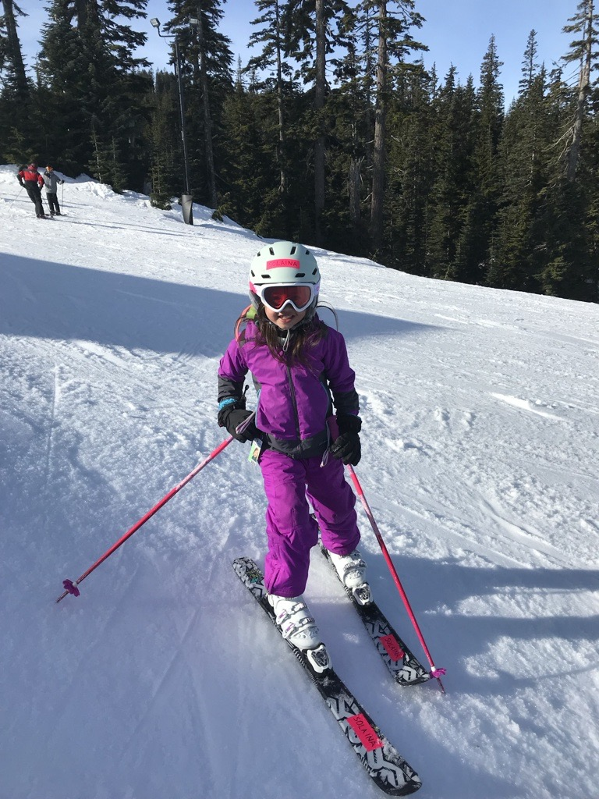
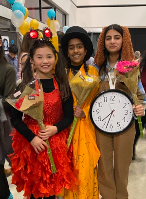
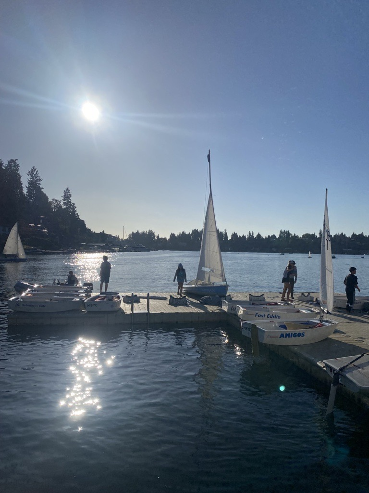
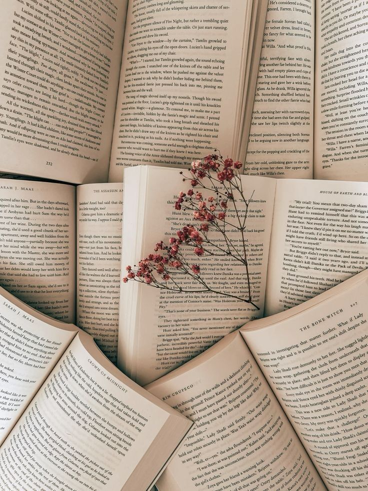
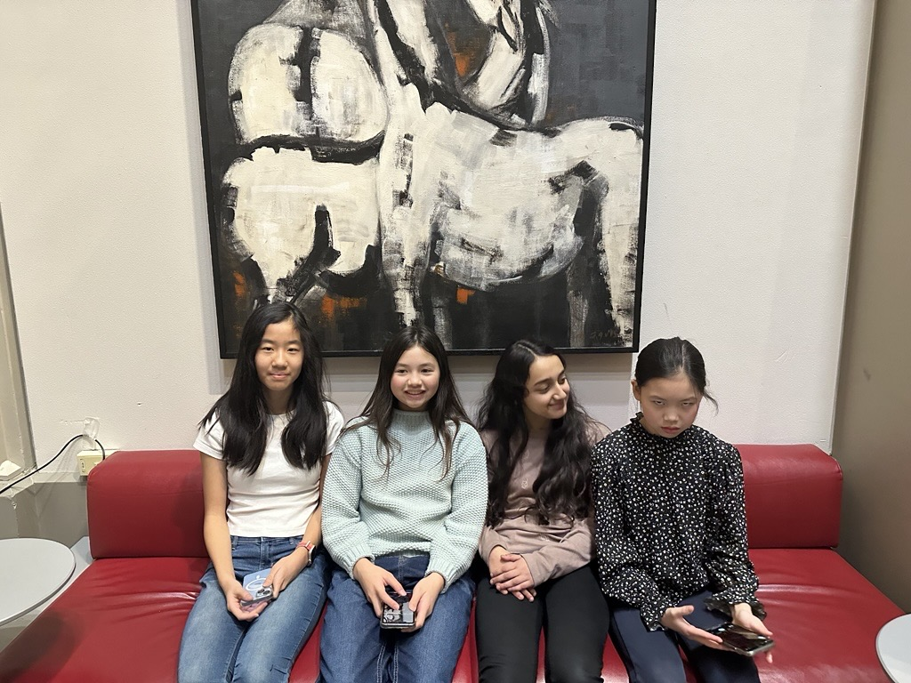

One of my hobbies is playing the piano. I have been playing piano since I was around 6 years old and participate in composition competitions and exams annually. This summer, I will be earning my piano diploma with the American College of Musicians and hope to also teach piano for my music school in the next few years. I really enjoy playing and listening to music and am always trying to improve my skills!
Another one of my hobbies is skiing. I have been skiing since I was 3 years old and find it to be a very fun and interesting sport. I go skiing every ski season and have also recently been going on the EPS ski buses. Next winter, I will be learning to teach skiing at Snoqualmie Pass.
Another extracurricular I like to participate in is Theater! I have participated in multiple performances at EPS and hope to participate in more in the future. The theater community is such a welcoming group, and casts always feel like one big family by closing night. I also enjoy getting to perform in front of a crowd and telling a story in a different way.
I also enjoy sailing! I started sailing two summers ago, and have since sailed FJs, 420s, and Lasers. I like being out on the water, and sailing around Lake Washington, and am planning on joining race team at the MBYC this summer.
One more hobby I have is reading. I love to read for fun, and the most recent book I read was A Tale of Two Cities by Charles Dickens. My favorite types of books are historical fiction and mystery, and I hope to have the opportunity to have more time to read in the future.
I have participated in a few different academic teams, and have been part of the MS Debate Team for the past 3 years. I enjoy public speaking and writing speeches, along with debating with teams from other schools. This winter, my debate partner and I were ranked 2nd in the experienced division, and I was also ranked 5th individually! In the future, I am planning on participating in the US Debate Team as well.